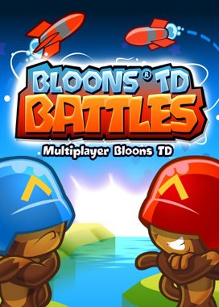
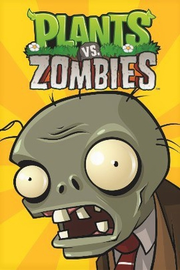
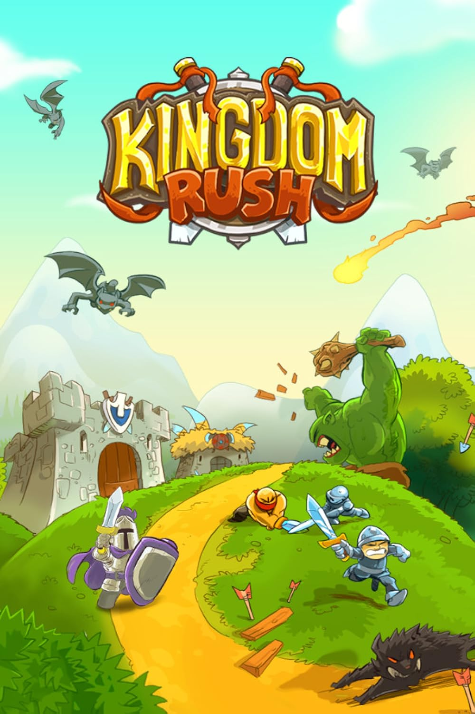

Bloons TD 6 е игра за отбранителна кула от 2018 г., разработена и публикувана от Ninja Kiwi. В играта играчът, който може да се обедини с до трима други играчи в кооперативен режим, създава защита, състояща се от няколко варианта на умели маймуни, структури и капани, за да предотврати подобни на балони предмети известни като "Bloons" от достигане на изход.
Btd battles

Bloons TD Battles беше пуснат на 12 декември 2012 г. Геймплеят е подобен на този в Bloons TD 5, но двама играчи се състезават един срещу друг в един от четирите режима на игра. В Assault Mode и Battle Arena всеки играч обикновено напредва през нивата, които обикновено са равни на 2x-1 по отношение на нивата на BTD5.
Plants vs zombies

Plants vs. Zombies е франчайз за видеоигри, разработен от PopCap Games, дъщерно дружество на Electronic Arts. Plants vs. Zombies е видео игра отбранителна кула, в която играчът защитава своя крайградски дом от зомбита. Тревата е разделена на решетка, като къщата на играча е отляво. Играчът поставя различни видове растения върху отделни квадратчета на решетката. Всяко растение има различен стил на защита, като стрелба, експлозия и блокиране.
Kingdom Rush

Kingdom Rush е игра за отбранителна кула, разработена от Ironhide Game Studio и публикувана от Armor Games. Kingdom Rush е игра отбранителна кула, която се развива в средновековна фентъзи среда. Нивата са съставени от редица предварително зададени пътища, по които враговете преминават, и играчът трябва да ги победи, преди да стигнат до края на пътя и да изтощи животи, за да предизвика края на играта. За да попречи на враговете да стигнат до края, играчът трябва да закупи защитни кули на определени точки около пътя, за да атакува всички идващи чудовища.